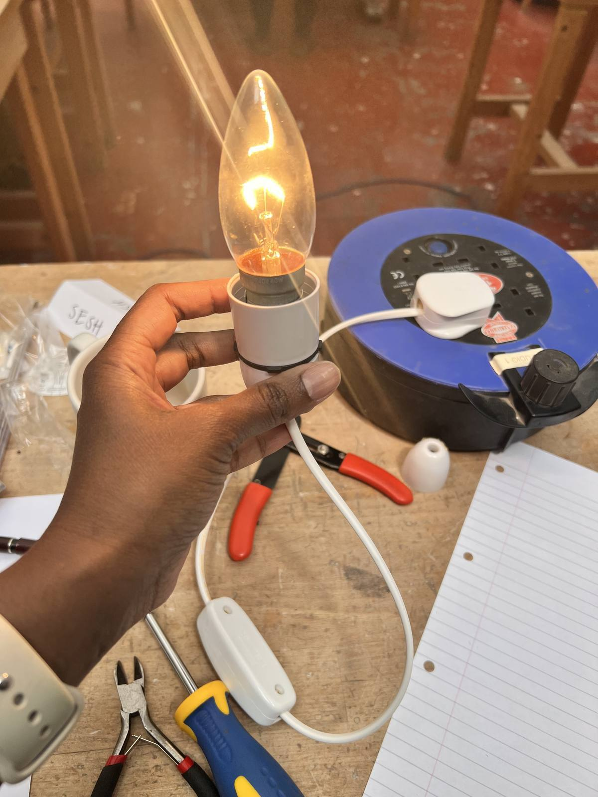
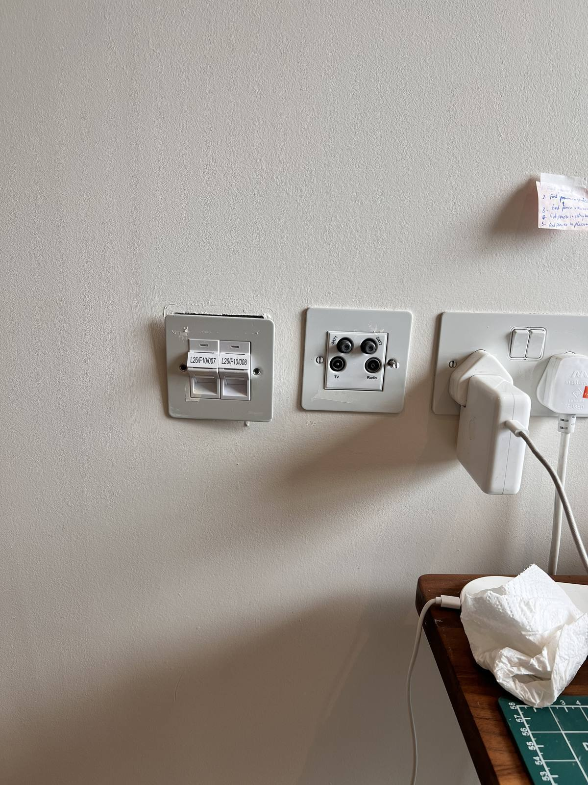
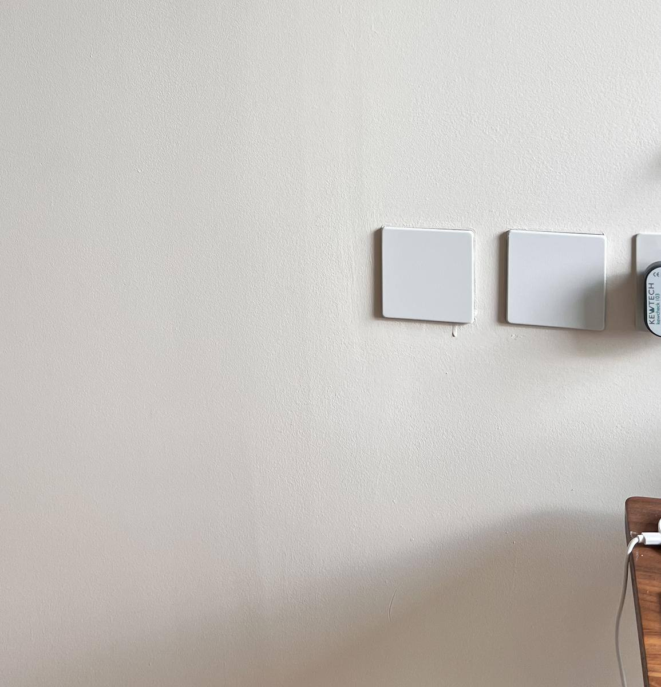
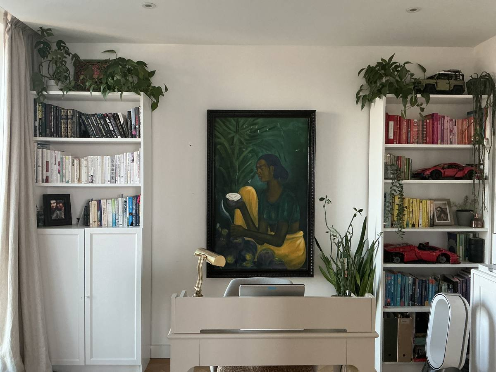

My paati (grandma) used to call me absent minded professor.
Imagine me a few decades ago - a skinny little brown girl running around slightly panicked because my mother has been yelling my name for a good five minutes and I only just heard it. My mother's voice hitting a lethal pitch seemed to be the only thing that could bring me out of whatever caught my fancy that day - lost in a book. Or a newspaper. Or a daydream.
I'm still that girl in many ways. I swing wildly from lazy inaction to whirling dervish. And while I am in dervish mode - I hyperfocus and the real world falls away.
I get lost in the thing I'm doing and ignore eating or drinking. If I do interact with anyone or anything during this time, I'm distracted or irritated or both. Not a nice feeling for those around me I am sure.
I spent most of last week in a hyperfocus haze - sewing and finishing up a couple of home projects.
Sewing, like reading, gets me into hyperfocus mode very reliably.
This might be because I am still very very new to sewing and I am still getting used to the physical and a mental challenge of sewing.
It is physically demanding in many ways
Sewing is mentally challenging too - It takes a lot of spatial imagination in a way that I hadn't appreciated before I started to sew. When you're sewing - you are working in reverse and you are converting a 2-d object(fabric) into 3-d (a garment). It feels disorienting. Imagine you are staring at a mirror and trying to draw a mirror image of your own face, with your non dominant hand. That gives you an idea of what sewing feels like most of the time.
Maybe a time will come when sewing feels like muscle memory to me. But for now. I still get lost in a haze where the hours and days disappear. (and I seem to make very little progress but that is not what we will focus on today)
In a weird coincidence wolves have come up in fiction and non-fiction I have read recently.
In a non-fiction book I read called Wintering, the author brings up various stories about wolves in Britain. how they were hunted to near extinction. How wolves behave, particularly in winter. And how they are an enduring symbol of survival.
In fiction - the Realm of the Elderlings saga has a wolf character that bonds to a human and is able to share his thoughts. This wolf is one of the best ever fictional characters that I have read. In both these books, there are similar themes.
Wolves live in the now.
They are always hungry. And they will feast today knowing that famine will come someday.
We all have a bit of the wolf in us - we want to give ourselves to the headiness of living in the now. But our human brain loves to be dragged into the what-ifs of the past or commitments we have made to our future.
Bringing it back to hyperfocus and living in the moment - whenever I emerge from my hours or days of being lost in something, it usually comes with an unnamed guilt. As if I am a child that has sneaked too many sweets (gulab jamuns in my case). The guilt sours the pleasure of having fully immersed or enjoyed myself.
What we can learn from wolves is the guilt-free indulgence in pleasure. What would it be like to accept this inner wolf and let it range farther?
I learned basic electrical DIY in a workshop. Surprisingly fun and calming.
I have since rewired a lamp

And closed out two plug sockets


Ajit jokes that I am making myself AI-proof. Maybe I am. But secretly I think I am trying to make myself apocalypse proof.
Also learned how to restretch a canvas - an antique painting we found in Pondicherry

And put the giant outer wooden frame together
The commitment I made to be more regular with strength training is going well enough. I'd like to ramp it up next week.
I even made it to dance class yesterday without significant injury so I'll count that as a double win.
I will start a new art class next week - hopefully gives me a regular rhythm for drawing.